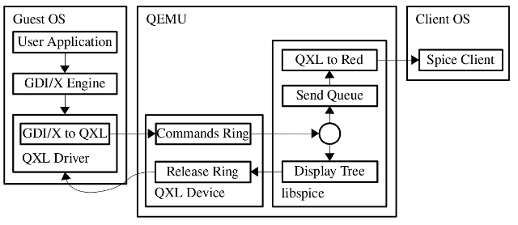
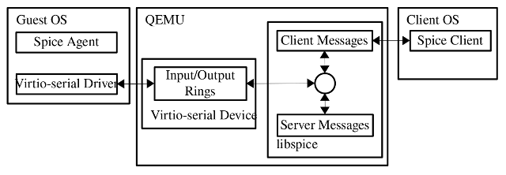
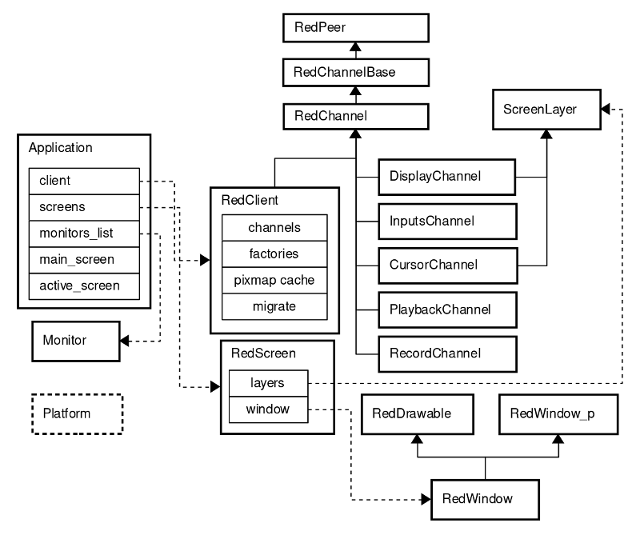
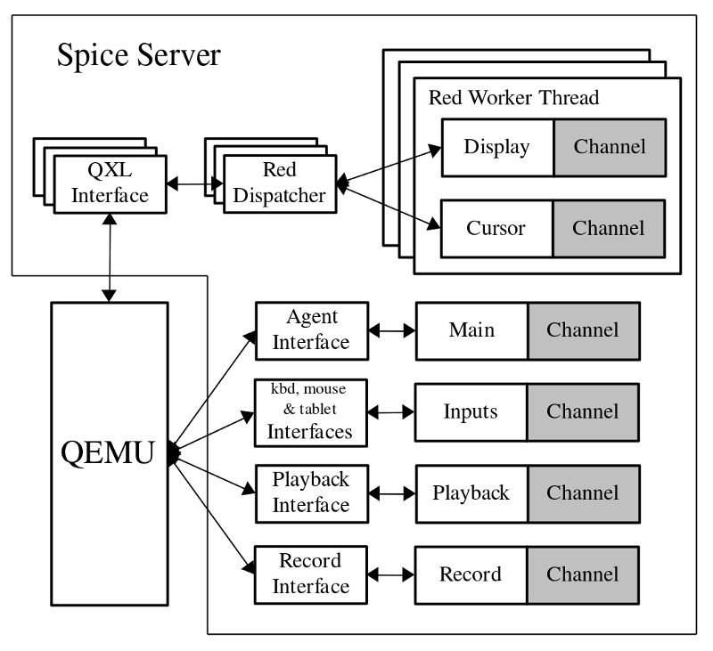
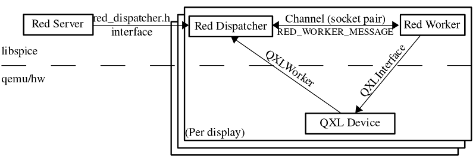

Copyright © 2009 Red Hat, Inc.
Licensed under a Creative Commons Attribution-Share Alike 3.0
United States License (see http://creativecommons.org/licenses/by-sa/3.0/us/legalcode).
1. Introduction
Spice is an open remote computing solution, providing client access to remote machine display and devices (e.g., keyboard, mouse, audio, usb). Spice achieves a user experience similar to an interaction with a local machine, while trying to offload most of the intensive CPU and GPU tasks to the client. Spice is suitable for both LAN and WAN usage, without compromising on the user experience.
2. Basic Architecture
Spice basic building blocks are the Spice protocol, Spice server and Spice client. Spice-related components include the QXL device and guest QXL driver.
-
Graphic Commands Flow
Figure 1. Graphic Commands FlowThe above figure shows the basic Spice architecture and guest-to-client data flow of graphic commands, when using libspice with QEMU. libspice can be used by any other VDI
[Spice VD Interfaces documentation]
compatible host application as well. Graphic commands data flow starts by a user application requesting the OS graphic engine (X or GDI) to perform a rendering operation. The graphic engine passes the commands to the QXL driver, which translates the OS commands to QXL commands and pushes them into a command ring. The command ring resides in the device memory. libspice pulls the commands from the ring and adds them to graphic commands tree. The graphic commands tree contains the set of commands, whose execution will reproduce the display content. The tree is used by libspice to optimize commands transmission to the client by dropping commands hidden by other commands. The commands tree is also used for video stream detection. libspice also maintains a queue of commands to be sent to the client, for updating its display. When a command is pulled from the queue for transmission to the client, it is translated into Spice protocol messages. Commands removed from the tree, are removed from the send queue as well. When a command is no longer required by libspice, it is pushed into the device release ring. The driver uses this ring for releasing commands resources. When a client receives a graphic command it uses the command to update the display. -
Agent Commands Flow
Figure 2. Agent Commands FlowSpice agent is a software module executed in the guest. Spice server and client use the agent for tasks that need to be performed in the guest context, such as configuring the guest display settings. The figure above shows the Spice client and server communication with the agent using VDIPort device and guest driver. Messages can be generated by the client (e.g., configuration of the guest display settings), the server (e.g., mouse motion), and the agent (e.g., configuration ack). The driver communicates with the device using its input and output rings. Client and server generated messages are written to the same write queue in the server and are later written to the device output ring. Messages are read from the device input ring to the server read buffer. The message port determines whether the message should be handled by the server or forwarded to the client.
3. Spice Client
Spice cross-platform (Linux & Windows) client is the interface for the end user.
-
Client Basic Structure
Figure 3. Client Basic Structure -
Client Classes
Following is an introduction to the key classes of the Spice client. For having a clean cross-platform structure, Spice defines generic interfaces, keeping their platform-specific implementation in parallel directories. One such generic interface is the Platform class, defining many low-level services such as timer and cursor operations.
Application is the main class, which contains and controls the client, monitors and screens. It handles general application functionality such as parsing command line arguments, running the main message loop, handling events (connection, disconnection, error, etc.), redirection of mouse events to input handler, toggling full screen mode, etc.
-
Channels
The client and server communicate via channels. Each channel type is dedicated to a specific type of data. Each channel uses a dedicated TCP socket, and it can be secured (using SSL) or unsecured. On the client side each channel has a dedicated thread, so different QoS can be given to each one by differentiating their thread priority.
RedClient serves as the main channel. It owns all the other instantiated channels and controls them (creating channels using their factory, connecting, disconnecting, etc.), and handles control, configuration and migration (using the Migrate class).
The ancestors of all the channels are:
-
RedPeer - socket wrapper for secured and unsecured communication, providing infrastructures such as connect, disconnect, close, send, receive, and socket swapping for migration. It defines generic message classes: InMessages, CompoundInMessage and OutMessage. All messages include type, size and data.
-
RedChannelBase - inherits RedPeer, provides the basic functionality for establishing channel connectivity with the server and support for channel capability exchange with the server.
-
RedChannel - inherits RedChannelBase. This class is the parent of all instantiated channels. Handles sending outgoing messages and dispatching incoming messages. RedChannel thread runs an event loop with various event sources (e.g., send and abort triggers). The channel socket is added as an event source for triggering Spice messages sending and receiving.
The available channels are:
-
Main - implemented by RedClient (see above).
-
DisplayChannel - handles graphic commands, images and video streams.
-
InputsChannel - keyboard and mouse inputs.
-
CursorChannel - pointer device position, visibility and cursor shape.
-
PlaybackChannel - audio received from the server to be played by the client .
-
RecordChannel - audio captured on the client side.
ChannelFactory is the base class for all channel factories. Each channel registers its specific factory for enabling RedClient to create channels by channel type.
-
-
Screens and Windows
-
ScreenLayer - screen layer is attached to specific screen, providing operations on rectangle areas (set, clear, update, invalidate, etc.). Layers are z-ordered (e.g., cursor is above display).
-
RedScreen - implements the screen logic and controls the window, using the screen layers (e.g., display, cursor) for displaying its content
-
RedDrawable - platform-specific implementation of basic pixmap. It supports basic rendering operations (e.g., copy, blend, combine).
-
RedWindow_p - platform-specific window data and methods.
-
RedWindow - inherits RedDrawable and RedWindow_p. Cross-platform implementation of basic window state and functionality (e.g., show, hide, move, minimize, set title, set cursor etc.).
-
-
-
Spice Server
Spice server is implemented in libspice, a Virtual Device Interface (VDI) pluggable library. VDI provides a standard way to publish interfaces of virtual devices by a software component. This enables other software components to interact with these devices. For more information, refer to . From one side, the server communicates with a remote client using the Spice protocol. From the other side, it interacts with the VDI host application (e.g., QEMU). For display remoting purposes the server maintains a commands queue and a tree for managing the current objects dependencies and hidings. QXL commands are processed and translated to Spice protocol commands sent to the client. Spice always attempts to pass the rendering tasks to the client, thus leveraging its hardware acceleration abilities. Rendering on the host side, by software or GPU, is done as a last result. The Spice server keeps guest graphic commands that compose the current image. It releases a command only when it is completely covered by other commands and there are no dependencies on it, or when we need to render the command to the frame buffer. The two main reasons that trigger drawing to the frame buffer are (1) Running out of resources; (2) The guest needs to read from the frame buffer.
-
Server Structure
Figure 4. Sever StructureThe server communicates with the client via channels. Each channel type is dedicated to a specific type of data. Each channel uses a dedicated TCP socket, and it can be secured (using SSL) or unsecured. The server channels are analogous of the client channels: Main, Inputs, Display, Cursor, Playback, and Record (for more information see Channels 2.3.2.1)
The main and input channels are controlled by handler functions (implemented in reds.c). The display and cursor channels are handled by a red worker thread per display. The audio playback and record channels have their own handlers (snd_worker.c). Libspice and the VDI host application (e.g. QEMU) communicate via interfaces defined for each functionality (e.g., QXL, agent, keyboard, mouse, tablet, playback, record), as detailed in .
As shown in the above figures, spice server consists of the following major components:
-
Red Server (reds.c)
The server itself, which listens for client connections, accepts them and communicates with them. Reds is responsible for:
-
Channels
-
Owns and manages the channels (register, unregister, shutdown)
-
Informs the client about active channels, so that client can create them
-
Main and input channel handling
-
Links establishment (both main and the others)
-
Socket operations and connections management
-
-
Handles SSL and ticketing
-
VDI interfaces (e.g., core, migration, keyboard, mouse, tablet, agent) addition and removal
-
Migration process coordination
-
Handling of user commands (e.g., from Qemu monitor)
-
Communication with guest agent
-
Statistics
-
-
Graphics subsystem
Figure 5. Graphics subsystemUnlike other subsystems in Spice server, the graphics subsystem runs in parallel to the server execution, on a dedicated thread (i.e, red worker).This structure enables independency between QEMU flow and the processing and rendering of incoming graphic commands, which can consume a lot of CPU resources. The figure above shows Spice server graphics subsystem structure. Red server initiates a dispatcher on a new QXL interface (i.e., VDI). The dispatcher creates red worker for that interface. The commands processed by the worker can originate from three sources: (1) Synchronized QXL device commands, (2) red server commands, both (1 and 2) delivered by the dispatcher using a socket (i.e., socket pair), (3) asynchronous QXL device commands, pulled by the worker from the QXL device rings using the interface.
Red Worker (red_worker.c)
Spice server holds a different instance of the red worker thread for each QXL device instance. The responsibilities of the red_worker are:
-
Processing QXL device commands (e.g. draw, update, cursor)
-
Handling messages received from the dispatcher
-
Channel pipes and pipe items
-
Display and cursor channels
-
Image compression (using quic, lz, glzencoding and jpeg)
-
Video streaming - identification, encoding and stream creation
-
Cache - client shared pixmap cache, cursor cache, palette cache
-
Graphic items removal optimization - using item tree, containers, shadows, excluded regions, opaque items
-
Cairo and OpenGL (pbuf and pixmap) renderers - canvas, surfaces etc.
-
Ring operations
Red Dispatcher (red_dispatcher.c)
-
Dispatcher, one per QXL device instance
-
Encapsulates the worker internals from the QXL device and reds
-
Initiates a worker for a QXL device instance and creates a worker thread
-
Dispatches the worker using a socketpair channel
-
QXL devices use the QXLWorker interface, implemented and attached by the red dispatcher, which translates the device calls to messages transmitted through the red worker pipe. This way keeps the two separated and logically independent.
-
Reds uses the interface defined in red_dispatcher.h for dispatcher functions such as dispatcher initialization, image compression change, video streaming state change, mouse mode setting and renderer addition.
-
-
-
-
Spice Protocol
Spice protocol is used for client-server communication, i.e., for transferring graphical objects, keyboard and mouse events, cursor information, audio playback and record chunks, and control commands. Detailed documentation of the Spice protocol can be found in
[Spice remote computing protocol definition]
. -
QXL Device
Spice server supports QXL VDI interface. When libspice is used with QEMU, a specific QEMU QXL PCI device can be used for improving the remote display performance and enhancing the graphic capabilities of the guest graphic system. QXL device requires guest QXL drivers for full functionality. However, standard VGA is supported when no driver exists. This mode also enables active display from the virtual machine (VM) boot stage. The device interacts with the driver using command and cursor rings, interrupts for display and cursor events, and I/O ports. Other responsibilities of the device include:
-
Initializing and map the device ROM, RAM and VRAM to physical memory
-
Mapping the I/O ports and handle reads and writes for managing: area updates, command and cursor notifications, IRQ updates, mode set, device reset, logging, etc.
-
Rings - initialize and maintain command and cursor rings, get commands and cursor commands from rings and wait for notifications. Maintain resources ring.
-
Communicating with the corresponding red worker using the QXLWorker interface, implemented and attached by red dispatcher, which translates the device calls to messages written to and read from the red worker pipe.
-
Registering the QXLInterface for enabling the worker to communicate with the device. The interface includes PCI information and functions for attaching a worker, getting display and cursor commands from rings, display and cursor notifications, mode change notification, etc.
-
Defining supported qxl modes and enabling modification of the current mode, including vga mode, where all monitors mirror a single device (vga clients)
-
Handle display initialization, update, resize andrefresh in VGA mode
-
-
QXL Guest Drivers
Platform-specific guest drivers are used to enable and communicate with the QXL device(s). The Windows drivers consist of a display driver that works with the graphics device interface (GDI) calls and structures, and a miniport driver that handles memory mapping, ports, and interrupts.
-
Spice Agent
Spice agent is an optional component for enhancing user experience and performing guest-oriented tasks. For example, the agent injects mouse position and state to the guest when using client mouse mode. It also enabled copy/paste of text and images between the guest and the client. In addition, it is used for configuration of the guest display settings. The agent consists of a system service and a user process. There is a windows and a linux implementation.
4. Features
-
Graphic Commands
Spice supports transmission and handling of 2D graphic commands (3D support is soon to come), as opposed to frame buffer updates, which are used in many other remote desktop solutions. The QXL device commands are generic and platform-independent, so both Windows and X drivers use them natively.
-
Hardware Acceleration
The basic Spice client rendering is performed using Cairo, which is a cross-platform, device-independent library. Cairo provides vector graphics primitives for 2-dimensional drawing. Hardware acceleration is an additional rendering mode in which the rendering is performed on hardware by the client GPU and not by software, using the client CPU. Hardware acceleration is implemented using OpenGL (experimental) in Linux, and GDI in Windows. . Hardware acceleration advantages are:
-
High performance rendering - using OpenGL the Spice client is able to render much faster than before. Heavy software operations such as stretching (used by video streaming) are much faster when preformed by hardware than by software. Therefore, Spice achieves a much smoother user experience.
-
Reducing client CPU usage - the client enjoys more CPU time, which can be used for other tasks like audio.
Unlike Cairo, which is an independent software library, OpenGL is a hardware library that depends on the driver and hardware implementation. As a result, Spice might suffer from incorrect rendering, heavy CPU usage, or client or host crash in the worst case. In addition, although OpenGL is a global standard, the implementation of hardware and drivers changes dramatically between vendors. Thus, on different GPUs, Spice might display different rendering output, and different performance might be detected. In addition, there are devices which do not support OpenGL at all.
The server also uses OpenGL for hardware acceleration, sharing the same code as the Linux client.
-
-
Image Compression
Spice offers several image compression algorithms, which can be chosen on server initiation, and dynamically at run-time. Quic is Spice proprietary image compression utility which is based on the SFALIC algorithm
[Starosolski, R.: Simple Fast and Adaptive Lossless Image Compression Algorithm, Software-Practice and Experience, 2007, 37(1):65-91, DOI 10.1002/spe.746.]
. The LZ (LZSS)
[Lempel-Ziv-Storer-Szymanski: “Data compression via textual substitution” published in Journal of the ACM (pp. 928-951)]
algorithm, adjusted to images, is another option. Both Quic and LZ are local algorithms, i.e., they encode each image independently. Global LZ (GLZ) is another Spice proprietary, that uses LZ with an history-based global dictionary. GLZ takes advantage of repeating patterns among images for shrinking the traffic and save bandwidth, which is critical in a WAN environment. Spice also offers an automatic mode for compression selection per-image, where the choice between LZ/GLZ and Quic is heuristically based on the image properties. Conceptually, artificial images are compressed better by LZ/GLZ, and real images are compressed better by Quic. -
Video Compression
Spice uses lossless compression for images sent to the client, and not lossy compression, in order to avoid disruption of important display objects . However, since (1) video streams can be major consumers of bandwith, as each video frame is an independent image, and (2) their content is mostly uncritical, Spice employs lossy video compression for such streams: Spice server heuristically identifies video areas by identifying regions that are updated with high rate. These areas updates are sent to the client as video streams coded using the loss-prone Motion JPEG algorithm (M-JPEG). This mechanism saves a lot of traffic, improving Spice performance, especially in WAN. Nevertheless, in some circumstances the heuristic behavior might cause low quality images (e.g., when identifying updated text area as a video stream). Video streaming can be chosen on server initiation and can be changed dynamically on run-time..
-
Caching
Spice implements client image caching in order to avoid redundant transmissions to the client. Caching applies to any kind of image data sent to the client, including pixmaps, palettes and cursors. Each image arrives from the driver with a unique id and a cache hint. Non-identical images have different ids, while identical images share the same id. The cache hint recommends the server to cache the image. Pixmap cache is shared among all the displays. Cache is defined per connection and synchronized between the server and the client, i.e., in each moment the server knows exactly which images are in the client cache. Moreover, the server is the one to decide whether an item should be added or removed from the cache. The client cache size is set by the client and transferred to the server through the display channel initialization message. The server monitors the current cache capacity and when it lacks space it removes the least recently used cache items until there is enough available cache space. The server sends an invalidate command with these items and the client removes them.
-
Mouse Modes
Spice supports two mouse modes, server and client. The mode can change dynamically and is negotiated between the client and the server.
-
Server mouse - use the QEMU ps/2 mouse emulation for enabling mouse in the guest. Upon user click inside the Spice client window, client mouse is captured and set invisible. The client sends mouse moves as delta coordinates to the server. Therefore, client mouse is returned to the window center after each move. In this mode, the server controls mouse position on display, so it is always synchronized between the client and the guest. However, it might be problematic on WAN or a loaded server, where mouse cursor might have some latency or non-responsiveness.
-
Client mouse - client mouse is used as the effective pointing device. It is not captured and guest cursor is set invisible. The client sends mouse moves as absolute coordinates to the server. Guest agent scales the coordinates for the guest virtual desktop and injects the appropriate cursor position. For a single monitor, client mouse can be used even without an agent if VDI host application registers an absolute pointing device (e.g., USB tablet in QEMU). In this case. the Spice server scales the coordinates. Client mode is appropriate for WAN or loaded server, since cursor has smooth motion and responsiveness. However, the cursor might loss sync (position and shape) for a while. The client mouse cursor is updated according to the guest mouse cursor.
-
-
Multiple Monitors
Spice supports any number of monitors, constrained only by the guest, client, and server limitations. The number of monitors and their RAM size is set when launching the VM. Spice supports automatic configuration of the guest monitors resolution and display settings, according to the client machine settings. This is implemented by a client command to the guest agent.
-
2-way Audio and Lip-sync
Spice supports audio playback and recording. Playback is compressed using the OPUS algorithm. Lip-sync between video and audio is achieved by time-stamping the video frames in the QXL device and injecting them in the client side, synchronized with the audio, which is independent.
-
Hardware Cursor
The QXL device supports cursor hardware acceleration. Separating the cursor from the display enables prioritizing the cursor for better responsiveness. In addition, it reduces the network traffic.
-
Live Migration
VM migration between servers is seamless to a connected client. The complete connection state, including the open channels and cursor, is saved on the source and restored on the destination.
-
WAN optimizations
The server sends an initial ping message to determine latency and bandwidth. If they are worst then a threshold, the server tells the guest to reduce guest side features, currently implemented only in windows guests, reducing bit depth and disabling animations and wallpaper, and additionally images are compressed using lossless jpeg and zlib-glz. If an image is required for another operation such as or it is resent in lossless encoding.
-
Copy and Paste
When a guest agent is running there is support for copying and pasting text and images in both directions between the client and the guest.